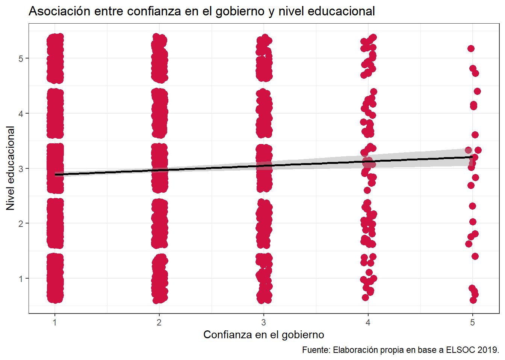

#Cargar librerias
pacman::p_load(dplyr, # Manipulacion datos
sjPlot, # Graficos y tablas
sjmisc, # Descriptivos
kableExtra, # Tablas
psych, # Estadísticos
broom,
rempsyc) # Varios
options(scipen = 999) # para desactivar notacion cientifica
rm(list = ls()) # para limpiar el entorno de trabajo
#Cargar base de datos
load("C:/Users/Acer/Downloads/trabajo estadistica/input/ELSOC_Long_2016_2023.RData")
datos_ola_w04 <- elsoc_long_2016_2023 %>%
filter(ola == 4)
elsoc_w04 <- elsoc_long_2016_2023 %>%
filter(ola == 4) %>%
select(
c05_01, # confianza gobierno
m01, # nivel educacional
m13, # salario
m0_sexo,
m0_edad,
c01 #satisfaccion en la democracia
) %>%
rename(
confianza_gobierno = c05_01,
nivel_educacional = m01,
salario = m13,
sexo = m0_sexo,
edad = m0_edad,
satisfaccion_demo = c01
)Trabajo final Estadística Correlacional
Confianza en el Gobierno de Chile: Un análisis de factores sociodemográficos (ELSOC 2019)
Resumen: La presente investigación buscó medir el nivel de confianza en el gobierno en el caso chileno mediante un análisis del año 2019 de Encuesta Longitudinal Social de Chile, medición sobre la cual se plantean cinco hipótesis que buscan estimar la relación que tiene conocer su correlación con las variables nivel educativo, sexo, salario, edad y satisfacción con la democracia. Mediante un exámen de esta medición se emplearon técnicas de análisis cuantitativo orientadas a evaluar la existencia de asociaciones significativas entre las variables de estudio, además se aplicaron distintos procedimientos de contraste de hipótesis nula, lo que permitió examinar de manera diferenciada los patrones de relación con la confianza institucional. Como resultado, se encontró evidencia a favor de asociaciones entre la confianza en el gobierno y nivel educacional; confianza en el gobierno y edad; confianza en el gobierno y sexo; y confianza en el gobierno; confianza en el gobierno y salario y satisfacción con la democracia, sin embargo, estas asociaciones fueron de baja magnitud.
Introducción
El presente documento busca analizar el nivel de confianza en el gobierno en Chile y su relación con las variables de nivel educacional, salario, edad, sexo y satisfacción con la democracia respectivamente, a partir de la base de datos ELSOC 2016-2023. Debido a que se realiza un cuestionario por año, se tomó la decisión de analizar nuestra variable dependiente mediante el sondeo correspondiente al año 2019 por su relación con la creciente inestabilidad en torno a la confianza en el gobierno.
Se considera que el estudio sobre el nivel de confianza en el gobierno –variable dependiente seleccionada– es de suma relevancia bajo el marco de desafección y desconfianza política que manifiesta la ciudadanía. Dentro de PNUD (2019). Diez años de auditoría a la democracia: Antes del estallido. Santiago de Chile, Programa de las Naciones Unidas para el Desarrollo se afirma que “la vitalidad de la democracia se ve comprometida por una acentuada disminución en la confianza ciudadana hacia las instituciones, al mismo tiempo en la región de América Latina, diversas naciones atraviesan coyunturas de inestabilidad social, política y económica que representan serias amenazas para la solidez democrática” (p. 40)
Debido a que el objetivo es medir el nivel de confianza en las instituciones, encarnado principalmente en la confianza en el gobierno, se puede establecer que la relación se enmarca en un análisis referente a la cohesión social, pues “la confianza entre las personas mantiene una cercana relación con respecto a la cohesión social, ya que en la medida en que los agentes creen en la palabra del otro, pueden establecer metas comunes y trabajar en conjunto para lograrlas, pero cuando la confianza es baja la cohesión social tiende a desestabilizarse” (Keefer & Scartascini, 2022, p. 6).
Considerando lo anterior, analizaremos el nivel de confianza en el gobierno, entendiendo por ello “la forma en que las personas perciben y evalúan su desempeño en función de una serie de objetivos y de principios normativos según los cuales se espera que operen” (Pena, 2023, p. 60). En ese contexto, es relevante precisar que, con el objetivo de que los ciudadanos confíen en el gobierno, deben reconocer el marco normativo correspondiente para eventualmente ponderar su funcionamiento.
Además, comprenderemos la relevancia que tiene conocer la relación entre el nivel de confianza en el gobierno y la edad, pues según Morales (2020) un predictor sistemático del nivel de confianza en las instituciones refiere a la edad, donde los más jóvenes muestran menores niveles de confianza en las instituciones. Inclusive, Morales (2008) evidencia que la edad surge como un determinante en la confianza institucional, pues las personas mayores confían más que los jóvenes, y en ese sentido, si no hay mejoras en la percepción de confianza en el gobierno, es altamente probable que esta desconfianza tienda al alza de mantenerse esta tendencia.
Con respecto al sexo, OECD (2025) evidencia que en los países de América Latina y El Caribe es posible identificar una diferencia entre hombres y mujeres con respecto a la confianza en el gobierno, en donde el porcentaje de los hombres corresponde a un 37% mientras que el de las mujeres corresponde a un 34%. A pesar de que esta diferencia es pequeña, varía en los distintos países, puesto que en los casos de Colombia y México esta brecha es más amplia. (p. 57).
Con respecto a la relación entre el nivel educativo y el nivel de confianza en el gobierno, “en países de la OCDE la población con menores niveles educativos, estatus social e ingresos y las personas que perciben inseguridad financiera o altos niveles de preocupación económica reportan tener niveles más bajos de confianza en el gobierno” (Irarrázaval y Cruz, 2023, p. 10)
Finalmente, bajo este enfoque se plantean cuatro hipótesis principales:
En primer lugar, se espera identificar que a mayor nivel educacional habrá un mayor nivel de confianza en el gobierno.
En segundo lugar, se espera evidenciar que a mayor edad habrá un mayor nivel de confianza en el gobierno.
En tercer lugar, se espera encontrar una diferencia por sexo con respecto al nivel de confianza en el gobierno.
En cuarto lugar, se espera encontrar evidencia que indique que a mayor salario habrá una mayor confianza en el gobierno.
En quinto lugar, se espera encontrar evidencia que a mayor satisfacción con la democracia habrá mayor nivel de confianza en el gobierno.
Metodología
Se recurrió al uso del software R Studio, seleccionando la base longitudinal 2016-2023, específicamente la “ola 4” correspondiente a la medición del año 2019, debido a su pertinencia en un contexto de percepción de legitimidad inestable reforzado por la literatura revisada. El Estudio Longitudinal Social de Chile tiene como objetivo final aportar datos empíricos sobre la evolución del conflicto y cohesión social en el país, mediante la incorporación de opiniones, creencias y actitudes de la población sobre aquellos datos empíricos (Centro de Estudios de Conflicto y Cohesión Social [COES], 2018, párr. 1).
En ese sentido, el análisis llevado a cabo es de carácter cuantitativo, en donde se seleccionó como variable dependiente el nivel de confianza en el gobierno, y como variables independientes: nivel educativo, edad, sexo. salario y satisfacción con la democracia. Las variables seleccionadas fueron; “C05_01” renombrada por “confianza_gobierno”, “M01” renombrada por “nivel_educacional”, “M13” renombrada por “salario”, “M0_edad” renombrada por “edad”, “M0_sexo” renombrada por “sexo”, “M13” renombrada por “salario” y “C01” renombrada por “satisfaccion_demo”.
Con respecto al tratamiento de valores perdidos, se reemplazaron valores fuera de rango (-666, -777, -888, -999) por NA, al igual que los valores máximos fueron recodificados a NA. Si bien las variables “sexo”, “edad” y “satisfacción_demo” presentan niveles muy bajo de NA, y las variables “confianza_gobierno” y “nivel_educacional” representan solo un aproximado entre el 0% y 0.35% de valores perdidos, la variable “salario” presenta un alto porcentaje de NA (40% aproximadamente). Es por ello que se tomó la decisión metodológica de aplicar el tratamiento de pairwise en el caso de los análisis bivariados, debido a que con ello, es posible recuperar la máxima cantidad posible de casos disponibles en cada correlación.
Las variables “confianza_gobierno” y “nivel_educacional” fueron recodificadas. La primera fue recodificada en dos categorías (“confianza_gobierno_recode”) para realizar una correlación tetracórica con la variable dicotómica “sexo”, y la segunda fue recodificada en cinco categorías con el objetivo de agrupar los niveles educativos y lograr una mejor interpretación de los análisis bivariados. Con respecto a la demás variables, no hubo necesidad de recodificar, pues el nivel de medición de las variables seleccionadas cumplían el sentido del atributo (medición en donde el puntaje más bajo representa menor presencia –o ausencia– del atributo, y el más alto representa mayor presencia del mismo).
#Reemplazar valores no válidos (-999, -888, -777, -666) con NA
elsoc_w04 <- elsoc_w04 %>%
mutate(
across(
everything(),
~ case_when(
.x %in% c(-666, -777, -888, -999) ~ NA,
TRUE ~ .x
)
)
)
# Identificar el valor máximo real (excluyendo NAs)
max_salario <- max(elsoc_w04$salario, na.rm = TRUE)
# Reemplazar el valor máximo por NA
elsoc_w04 <- elsoc_w04 %>%
mutate(salario = ifelse(salario == max_salario, NA, salario))
library(dplyr)
elsoc_w04 <- elsoc_w04 %>%
mutate(
salario = if_else(
salario == max(salario, na.rm = TRUE),
NA_real_,
salario
)
)
maximo <-
max(elsoc_w04$salario, na.rm = T)
elsoc_w04 <- elsoc_w04 %>%
dplyr::filter(!salario %in%
maximo)
sjPlot::plot_scatter(data = elsoc_w04,
x = salario,
y = salario)Warning: `aes_string()` was deprecated in ggplot2 3.0.0.
ℹ Please use tidy evaluation idioms with `aes()`.
ℹ See also `vignette("ggplot2-in-packages")` for more information.
ℹ The deprecated feature was likely used in the sjPlot package.
Please report the issue at <https://github.com/strengejacke/sjPlot/issues>.
summary(elsoc_w04) confianza_gobierno nivel_educacional salario sexo
Min. :1.000 Min. : 1.00 Min. : 0 Min. :1.000
1st Qu.:1.000 1st Qu.: 4.00 1st Qu.: 300000 1st Qu.:1.000
Median :1.000 Median : 5.00 Median : 400000 Median :2.000
Mean :1.608 Mean : 5.25 Mean : 523644 Mean :1.625
3rd Qu.:2.000 3rd Qu.: 7.00 3rd Qu.: 600000 3rd Qu.:2.000
Max. :5.000 Max. :10.00 Max. :6000000 Max. :2.000
NA's :12 NA's :4 NA's :1397
edad satisfaccion_demo
Min. :19.00 Min. :1.000
1st Qu.:36.00 1st Qu.:1.000
Median :49.00 Median :1.000
Mean :48.77 Mean :1.707
3rd Qu.:61.00 3rd Qu.:2.000
Max. :92.00 Max. :5.000
NA's :98 #RECODIFICACION DE GOBIERNO
elsoc_w04 <- elsoc_w04 %>%
mutate(
confianza_gobierno_recode = case_when(
confianza_gobierno == 1 ~ 1, # ausencia
confianza_gobierno == 2 ~ 1, # presencia
confianza_gobierno == 3 ~ 2,
confianza_gobierno == 4 ~ 2,
confianza_gobierno == 5 ~ 2,
TRUE ~ NA_real_ # Asignar NA en caso de valores faltantes
))
#Recodificacion de nivel educacional
elsoc_w04 <- elsoc_w04 %>%
mutate(
nivel_educ_recode = case_when(
nivel_educacional == 1 ~ 1,
nivel_educacional == 2 ~ 1,
nivel_educacional == 3 ~ 2,
nivel_educacional == 4 ~ 2,
nivel_educacional == 5 ~ 3,
nivel_educacional == 6 ~ 3,
nivel_educacional == 7 ~ 4,
nivel_educacional == 8 ~ 4,
nivel_educacional == 9 ~ 5,
nivel_educacional == 10 ~ 5,
TRUE ~ NA_real_ # datos perdidos u otros valores
)
)La variable dependiente seleccionada “confianza_gobierno” corresponde a un nivel de medición de tipo ordinal con un rango de 1 a 5 en donde 1 corresponde a “Nada de confianza”, y 5 corresponde a “Mucha confianza”. El objetivo de esta variable es medir el nivel declarado de confianza en el gobierno por parte de la muestra.
Con respecto a nuestras variables independientes; “nivel_educacional” corresponde a un nivel de medición de tipo ordinal con un rango de 1 a 10 en donde 1 corresponde a “Sin estudios” y 10 corresponde a “Estudios de posgrado (magíster o doctorado)”; “salario” corresponde a un nivel de medición de tipo continua, pues en el cuestionario se solicita que el encuestado constate su ingreso mensual en pesos; “edad” corresponde a un nivel de medición de tipo continua al igual que la anterior, debido a que se solicita que el encuestado constate su edad en años; “sexo” corresponde a un nivel de medición de tipo dicotómica en donde 1 = hombre, 2 = mujer; y finalmente, la variable “satisfaccion_demo” corresponde a un nivel de medición ordinal con un rango de 1 a 5, en donde 1 corresponde a “Nada satisfecho” y 5 corresponde a “Muy satisfecho”. El objetivo principal de esta variable es medir el nivel de satisfacción con la percepción del funcionamiento de la democracia en el país.
Para contrastar las hipótesis planteadas, se utilizó la técnica de contraste de hipótesis nula con el fin de determinar si las asociaciones observadas pueden extrapolarse a la población. En primer lugar, se utilizó correlación de Spearman (entre variables ordinales) para dos correlaciones: “confianza_gobierno” con “nivel_educacional” y “confianza_gobierno” con “satisfaccion_demo”. En segundo lugar, se utilizó correlación de Pearson (entre variables continuas)para dos correlaciones: “confianza_gobierno” con “edad” y “confianza_gobierno” y “salario”. Finalmente, y en tercer lugar, se utilizó correlación tetracórica, Chi cuadrado y Coeficiente Phi (entre variables categóricas): “confianza_gobierno_recode” con “sexo”. Con respecto a la interpretación del tamaño del efecto, se realizó siguiendo los criterios de Cohen, que distinguen efectos pequeños (≈0,10), medianos (≈0,30) y grandes (≈0,50).
A continuación se presenta una tabla de descriptivos básicos que incluye medidas de tendencia central, dispersión y distribución:
Tabla 1. Tabla de estadísticos descriptivos
library("ggpubr")Warning: package 'ggpubr' was built under R version 4.4.3Cargando paquete requerido: ggplot2Warning: package 'ggplot2' was built under R version 4.4.3
Adjuntando el paquete: 'ggplot2'The following objects are masked from 'package:psych':
%+%, alphaThe following object is masked from 'package:sjPlot':
set_theme# Crear tabla descriptiva
tabla_descriptivos <- elsoc_w04 %>%
select(confianza_gobierno, nivel_educacional, salario, sexo, edad, satisfaccion_demo) %>%
sjmisc::descr(show = c("label", "range", "mean", "sd", "NA.prc", "n")) %>%
as.data.frame()
# Crear tabla con ggtexttable
tabla_plot <- ggtexttable(
tabla_descriptivos,
rows = NULL, # Sin nombres de filas
theme = ttheme("light")
)
# Mostrar tabla como un gráfico
print(tabla_plot)
Mediante un análisis descriptivo de las variables se realizó la estimación de medidas de tendencia central (media y mediana), de dispersión (desviación estándar y rango), así como también la presentación de frecuencias en el caso de las variables categóricas (“salario”) y ordinales (“confianza_gobierno”, “nivel_educacional” y “satisfaccion_demo”).
En primer lugar, se observa que la variable “confianza_gobierno” presenta una media de 1.60 y una desviación estándar de 0.86, pudiendo establecerse un bajo nivel de confianza en las instituciones, pues el grueso de los valores se concentran entre 1 (“nada”) y 2 (“poca”).
En segundo lugar, se observa que la variable “nivel_educacional” presenta una media de 5.25 y una desviación estándar de 2.23, lo que sugiere que la mayoría de nuestro N se posiciona principalmente en niveles educacionales medios y medios altos (mayoritariamente desde educación media completa a educación superior técnica-universitaria).
En tercer lugar, se observa que la variable “salario” presenta una media de $1.028.307 y una desviación estándar de $2.224.337, lo que nos indica que quienes tienen altas remuneraciones alteran la estructura real de los salarios.
En cuarto lugar, se observa que la variable “sexo” presenta una media de 1.62 y una desviación estándar de 0.48, lo que nos sugiera que la muestra se distribuye equitativamente entre hombres (1) y mujeres (2), sin valores perdidos.
En quinto lugar, se observa que la variable “edad”, presenta una media de 48.7 años y una desviación estándar de 15.41, lo que indica una muestra heterogénea en cuanto a las edades (desde jóvenes hasta la personas mayores).
En sexto lugar, se observa que la variable “satisfacción_demo” presenta una media de 1.70 y una desviación estándar de 0.91, lo que se describe como un nivel de satisfacción promedio bajo, pero con una dispersión o variabilidad moderada en las respuestas de la muestra.
Análisis
A continuación se presentarán las pruebas bivariadas realizadas para evaluar las asociaciones entre la variable confianza en el gobierno y los distintos predictores seleccionados que se describieron anteriormente. Para cada relación se formula la hipótesis nula (H₀) y alternativa (H₁), junto con el coeficiente correspondiente, su significancia y la magnitud del efecto según los criterios de Cohen.
1.Relación entre confianza en el gobierno y nivel educacional
Hipótesis:
H₀: (confianza_gobierno, nivel_educacional) = 0
H₁: (confianza_gobierno, nivel_educacional) ≠ 0
#Correlacion Spearman,confianza en el gobierno y nivel educacional
cor.test(elsoc_w04$confianza_gobierno, elsoc_w04$nivel_educ_recode, method = "spearman", use = "pairwise.complete.obs")Warning in cor.test.default(elsoc_w04$confianza_gobierno,
elsoc_w04$nivel_educ_recode, : Cannot compute exact p-value with ties
Spearman's rank correlation rho
data: elsoc_w04$confianza_gobierno and elsoc_w04$nivel_educ_recode
S = 6139044680, p-value = 0.0002461
alternative hypothesis: true rho is not equal to 0
sample estimates:
rho
0.06283657 Para realizar el análisis bivariado correspondiente a la primera hipótesis se utilizó el coeficiente de correlación de Spearman, dado que ambas variables, “confianza_gobierno” y “nivel_educacional”, son de naturaleza ordinal. El valor obtenido fue de 0,06, lo que indica una correlación pequeña, pero positiva entre las variables. El valor de p fue de 0,0004, siendo menor al valor teórico (p < 0,05). Por tanto, la correlación observada es estadísticamente significativa según Cohen. De esta manera, con un 95% de confianza, es posible rechazar la hipótesis nula, la cual sugiere que no existe asociación entre nivel educacional y confianza institucional y, por lo tanto, se puede afirmar que existe una asociación estadísticamente significativa, aunque de magnitud baja, entre ambas variables.
Tabla 3. Tabla de contingencia entre confianza en el gobierno y nivel educacional recodificado
#Tabla de contingencia,confianza en el gobierno y nivel educacional
sjPlot::tab_xtab(elsoc_w04$confianza_gobierno, elsoc_w04$nivel_educ_recode, show.row.prc = TRUE)| Grado de confianza: El Gobierno |
nivel_educ_recode | Total | ||||
|---|---|---|---|---|---|---|
| 1 | 2 | 3 | 4 | 5 | ||
| Nada | 295 14.5 % |
465 22.8 % |
705 34.6 % |
344 16.9 % |
227 11.1 % |
2036 100 % |
| Poca | 107 13.3 % |
168 20.8 % |
253 31.4 % |
173 21.5 % |
105 13 % |
806 100 % |
| Algo | 55 12.6 % |
89 20.3 % |
132 30.1 % |
91 20.8 % |
71 16.2 % |
438 100 % |
| Bastante | 14 14.7 % |
24 25.3 % |
18 18.9 % |
19 20 % |
20 21.1 % |
95 100 % |
| Mucha | 5 20 % |
5 20 % |
8 32 % |
4 16 % |
3 12 % |
25 100 % |
| Total | 476 14 % |
751 22.1 % |
1116 32.8 % |
631 18.6 % |
426 12.5 % |
3400 100 % |
| χ2=34.790 · df=16 · Cramer's V=0.051 · Fisher's p=0.003 | ||||||
En la tabla se observa una diferencia entre los distintos niveles educacionalesrespecto a la confianzaen el gobierno. Algunos grupos educativos muestran una mayor proporción de personas con confianza baja, mientras que los otros presentan mayores porcentajes en niveles medios o altos de confianza. Esto indica, que la distribución de la confianza no es completamente homogénea entre los distintos niveles educativos
Los resultados muestran que existen diferencias entre los grupos educacionales en su nivel de confianza, pero estas diferencias son de baja magnitud, lo que sugiere que el nivel educacional tiene un efecto limitado sobre la variación en la confianza hacia el gobierno
Figura 1.
#Grafico de nivel educacional
# Filtrar data sin NA
elsoc_w04_clean <- elsoc_w04 %>%
filter(!is.na(confianza_gobierno),
!is.na(nivel_educ_recode))
# Gráfico de puntos, confianza en el gobierno y nivel educacional
sjPlot::plot_scatter(
data = elsoc_w04,
x = confianza_gobierno,
y = nivel_educ_recode,
fit.line = "lm", # Mostrar línea de regresión
show.ci = TRUE, # Mostrar intervalo de confianza
dot.size = 3,
dot.labels = elsoc_w04$idencuesta # Usa aquí la variable que quieras como etiqueta
) +
labs(
title = "Asociación entre confianza en el gobierno y nivel educacional",
y = "Nivel educacional",
x = "Confianza en el gobierno",
caption = "Fuente: Elaboración propia en base a ELSOC 2019."
) +
theme_bw()`geom_smooth()` using formula = 'y ~ x'
El gráfico visualiza un diagrama de dispersión a partir del cual es posible evidenciar una correlación positiva, pero débil entre las variables “confianza_gobierno” y “nivel_educacional” (rho = 0.063, p < 0.001) indicando que a medida que aumenta la confianza en el gobierno, aumenta a su vez el nivel educacional, pero manera leve. La dispersión de los puntos indica que los niveles educacionales se distribuyen de manera similar en los niveles de confianza.
2.Relación entre confianza en el gobierno y edad
H₀: (confianza_gobierno, edad) = 0
H₁: (confianza_gobierno, edad) ≠ 0
#Correlacion de Pearson, confianza en el gobierno y edad
cor.test(elsoc_w04$confianza_gobierno, elsoc_w04$edad, method = "pearson", use = "pairwise.complete.obs")
Pearson's product-moment correlation
data: elsoc_w04$confianza_gobierno and elsoc_w04$edad
t = 8.4854, df = 3402, p-value < 0.00000000000000022
alternative hypothesis: true correlation is not equal to 0
95 percent confidence interval:
0.1109065 0.1767064
sample estimates:
cor
0.1439656 En cuanto al análisis bivariado correspondiente a la segunda hipótesis, se utilizó coeficiente de correlación de Pearson, dado que la variable “confianza_gobierno” es ordinal y “edad”. El valor obtenido fue de 0,14, lo que indica una correlación pequeña y positiva entre las variables “edad” y “confianza_gobierno”. El valor de p fue menor a 0,001, siendo inferior al valor teórico (p < 0,05), por lo que la correlación observada es estadísticamente significativa según Cohen. De esta manera, con un 95% de confianza, es posible rechazar la hipótesis nula que plantea que no existe asociación entre la edad y la confianza en el gobierno y, por lo tanto, se puede afirmar que existe una asociación estadísticamente significativa, aunque de baja magnitud, entre ambas variables.
3.Correlación tetracórica entre confianza en el gobierno y sexo
Hipótesis:
H₀: (confianza_gobierno, sexo) = 0
H₁: (confianza_gobierno, sexo) ≠ 0
#Correlacion tetracorica, confianza en el gobierno y sexo
tetratorica_confianza_gobierno_sexo <- elsoc_w04 %>%
dplyr::select(confianza_gobierno_recode, sexo)
psych::tetrachoric(tetratorica_confianza_gobierno_sexo, na.rm = T)Call: psych::tetrachoric(x = tetratorica_confianza_gobierno_sexo, na.rm = T)
tetrachoric correlation
cnf__ sexo
confianza_gobierno_recode 1.00
sexo -0.07 1.00
with tau of
confianza_gobierno_recode sexo
0.98 -0.32 La correlación tetracórica entre las variables confianza en el gobierno y sexo arrojó un coeficiente de –0,07. Este valor indica una asociación negativa muy débil entre ambas variables.
Prueba Chi-Cuadrado
#Chi2
chi_results1 <- chisq.test(elsoc_w04$confianza_gobierno_recode, elsoc_w04$sexo)
chi_results1
Pearson's Chi-squared test with Yates' continuity correction
data: elsoc_w04$confianza_gobierno_recode and elsoc_w04$sexo
X-squared = 3.9055, df = 1, p-value = 0.04813La prueba Chi-cuadrado muestra una asociación estadísticamente significativa (p = 0.048 < 0.05), lo que indica que la confianza en el gobierno y el sexo están relacionados de manera no aleatoria. Esto significa que la distribución de los niveles de confianza en el gobierno varía ligeramente según el sexo.
Aunque la asociación es débil, el resultado sigue siendo significativo y sugiere que podrían existir diferencias entre hombres y mujeres en cómo evalúan o expresan su confianza en el gobierno. Este hallazgo, si bien de baja magnitud, refuerza la importancia de seguir investigando cómo el género podría influir en las actitudes políticas o la percepción institucional.
Cálculo de Phi
#Phi
chi_results1 <- chisq.test(elsoc_w04$confianza_gobierno_recode, elsoc_w04$sexo)
n <- na.omit(elsoc_w04 %>% select(confianza_gobierno_recode, elsoc_w04$sexo)) %>% nrow()
phi <- sqrt(chi_results1$statistic / n)
phi X-squared
0.03389223 El valor de Phi obtenido (0.0339) indica que la fuerza de la asociación entre confianza en el gobienro y sexo es extremadamente débil. Aunque el análisis Chi-cuadrado pudiera mostrar significancia estadística dependiendo del valor p, el tamaño del efecto medido por Phi revela que la relación entre ambas variables es prácticamente inexistente en términos sustantivos.
Tabla 4. Tabla cruzada entre confianza en el gobierno recodificado y sexo
#Tabla cruzadas, confianza en el gobierno_recode y sexo
sjPlot::tab_xtab(elsoc_w04$confianza_gobierno_recode, elsoc_w04$sexo, show.row.prc = TRUE)| confianza_gobierno_recode | Sexo del entrevistado |
Total | |
|---|---|---|---|
| Hombre | Mujer | ||
| 1 | 1049 36.9 % |
1797 63.1 % |
2846 100 % |
| 2 | 231 41.4 % |
327 58.6 % |
558 100 % |
| Total | 1280 37.6 % |
2124 62.4 % |
3404 100 % |
| χ2=3.906 · df=1 · &phi=0.035 · p=0.048 | |||
En la Tabla 4, se observan diferencias en la confianza en el gobierno entre hombres y mujeres. Entre quienes presentan baja confianza (categoría 1), el 36.9% son hombres y el 63.1% son mujeres, lo que muestra que dentro de esta categoría las mujeres están más representadas. Por otro lado, entre quienes presentan alta confianza (categoría 2), el 41.4% son hombres y el 58.6% son mujeres, lo que indica nuevamente una mayor presencia femenina, pero con una diferencia ligeramente menor que en la categoría anterior.
En conjunto, los resultados muestran que, en esta muestra, las mujeres tienden a concentrarse tanto en los niveles bajos como altos de confianza, aunque con mayor proporción en la categoría de baja confianza. Los hombres, en contraste, tienen una presencia algo menor en ambos niveles, pero relativamente mayor en la categoría de alta confianza en comparación con la proporción femenina en la misma categoría.
Si bien la relación entre el sexo y la confianza en el gobierno resulta estadísticamente significativa (χ² = 3.906, p = 0.048), la fuerza de asociación es muy débil (φ = 0.035). Esto significa que, aunque existe una diferencia entre hombres y mujeres en la distribución de los niveles de confianza, esta diferencia es pequeña y la relación entre ambas variables es limitada.
Figura 2.
#Grafico de barras, confianza en el gobierno y sexo
ggplot(subset(elsoc_w04, !is.na(confianza_gobierno) & !is.na(sexo)), aes(x = factor(confianza_gobierno), fill = factor(sexo))) +
geom_bar(position = "dodge") +
scale_fill_manual(
values = c("1" = "#A8E6CF", "2" = "#FFD1BA"), # Colores morado y rosado
labels = c("1" = "Masculino", "2" = "Femenino")
) +
labs(
title = "Distribucion de confianza en el gobierno según sexo",
x = "Confianza en el gobierno",
y = "Número de personas",
fill = "Sexo",
caption = "Fuente: Elaboración propia en base a ELSOC 2019"
) +
scale_x_discrete(labels = c(
"1" = "Nada",
"2" = "Poca",
"3" = "Algo",
"4" = "Bastante",
"5" = "Mucha"
)) +
theme_minimal() +
theme(
plot.title = element_text(face = "bold", size = 14, hjust = 0.5, color = "#000"),
axis.text.x = element_text(size = 10, color = "#000"),
axis.text.y = element_text(size = 10, color = "#000"),
axis.title = element_text(face = "bold", color = "#000"),
legend.title = element_text(face = "bold", color = "#000"),
legend.text = element_text(color = "#000"),
plot.caption = element_text(hjust = 1, size = 8, color = "#000")
)
El gráfico sugiere que las mujeres tienden a reportar niveles ligeramente menores de confianza en el gobierno, pero las diferencias visuales son pequeñas, lo que coincide con la magnitud débil de la asociación encontrada en la prueba estadística. Esto indica que, aunque el sexo y la confianza en el gobierno están asociados, la fuerza de la relación es baja, por lo que las diferencias entre ambos grupos no son pronunciadas.
4.Relación entre confianza en el gobierno y salario
Hipótesis:
H₀: (confianza_gobierno, salario) = 0
H₁: (confianza_gobierno, salario) ≠ 0
#Correlacion Pearson, confianza en el gobierno y salario
cor.test(elsoc_w04$confianza_gobierno, elsoc_w04$salario, method = "pearson", use = "pairwise.complete.obs")
Pearson's product-moment correlation
data: elsoc_w04$confianza_gobierno and elsoc_w04$salario
t = 4.7189, df = 2013, p-value = 0.000002534
alternative hypothesis: true correlation is not equal to 0
95 percent confidence interval:
0.06121202 0.14759318
sample estimates:
cor
0.1045999 Para analizar la relación entre la confianza en el gobierno y el salario, se aplicó un análisis bivariado mediante Pearson. El coeficiente obtenido fue de 0,109, lo que indica una correlación pequeña y positiva entre ambas variables. El valor de p fue 0,870, siendo inferior al valor teórico (p < 0,05), por lo que la correlación observada es estadísticamente significativa según los criterios de Cohen. De esta manera, con un 95% de confianza, es posible rechazar la hipótesis nula que plantea que no existe asociación entre el salario y la confianza en el gobierno. Por lo tanto, se puede afirmar que existe una asociación estadísticamente significativa, aunque de baja magnitud, entre ambas variables.
5.Relación entre confianza en el gobierno y satisfacción con la democracia
Hipótesis:
H₀: (confianza_gobierno, satisfaccion_demo) = 0
H₁: (confianza_gobierno, satisfaccion_demo) ≠ 0
#Correlacion Spearman, confianza en el gobierno y satisfaccion en la democracia
cor.test(elsoc_w04$confianza_gobierno, elsoc_w04$satisfaccion_demo, method = "spearman", use = "pairwise.complete.obs")Warning in cor.test.default(elsoc_w04$confianza_gobierno,
elsoc_w04$satisfaccion_demo, : Cannot compute exact p-value with ties
Spearman's rank correlation rho
data: elsoc_w04$confianza_gobierno and elsoc_w04$satisfaccion_demo
S = 3357754154, p-value < 0.00000000000000022
alternative hypothesis: true rho is not equal to 0
sample estimates:
rho
0.4464681 Para realizar el análisis entre la confianza en el gobierno y la satisfacción con la democracia se optó por el coeficiente de correlación de Spearman dada la naturaleza ordinal de las variables, midiendo así la fuerza y dirección de la asociación. El coeficiente obtenido fue de 0,4468607, lo que indica una correlación positiva de fuerza moderada. El valor p fue menor a 0,001, siendo menor al valor teórico (p < 0,05), por lo que este resultado permite rechazar la hipótesis nula de no asociación entre confianza en el gobierno y satisfacción con la democracia con un 99,9% de confianza, confirmando que la relación observada es estadísticamente significativa. Es decir, los resultados permiten afirmar que las personas que tienden a reportar niveles más altos de confianza en el gobierno, también tienden a reportar niveles más altos de satisfacción con la democracia.
Figura 3
#Grafico de barras, Confianza en el gobierno y satisfaccion con la democracia
ggplot(subset(elsoc_w04, !is.na(confianza_gobierno) & !is.na(satisfaccion_demo)), aes(x = factor(confianza_gobierno), fill = factor(satisfaccion_demo))) +
geom_bar(position = "dodge") +
scale_fill_manual(
values = c("1" = "#FEA790", "2" = "#FD844C", "3" = "#794D43", "4" = "#358E96", "5" = "#1A4F56"), # Colores morado y rosado
labels = c("1" = "Nada", "2" = "Poco", "3" = "Algo", "4" = "Bastante", "5" = "Muy")
) +
labs(
title = "Distribucion de confianza en el gobierno según la satisfaccion con la democracia",
x = "Confianza en el gobierno",
y = "Número de personas",
fill = "Satisfaccion con la democracia",
caption = "Fuente: Elaboración propia en base a ELSOC 2019"
) +
scale_x_discrete(labels = c(
"1" = "Nada",
"2" = "Poco",
"3" = "Algo",
"4" = "Bastante",
"5" = "Muy"
)) +
theme_minimal() +
theme(
plot.title = element_text(face = "bold", size = 14, hjust = 0.5, color = "#000"),
axis.text.x = element_text(size = 10, color = "#000"),
axis.text.y = element_text(size = 10, color = "#000"),
axis.title = element_text(face = "bold", color = "#000"),
legend.title = element_text(face = "bold", color = "#000"),
legend.text = element_text(color = "#000")
)
El gráfico sugiere que la insatisfacción con la democracia se asocia a menores niveles de confianza en el gobierno, mientras que una mayor satisfacción con la democracia tiene una tendencia a aumentar con la confianza, aunque sigue siendo leve generalmente hablando dentro de la muestra.
Discusión de resultados
En relación con las hipótesis planteadas, los análisis muestran asociaciones significativas en algunos casos, aunque de magnitud pequeña, lo que sugiere que la confianza en las instituciones está influida por las variables seleccionadas, pero en un grado limitado.
En primer lugar, la asociación entre confianza en el gobierno y nivel educacional también resulta significativa, pero nuevamente con una magnitud muy baja. Esto plantea que la educación podría influir en la manera en que las personas evalúan a las instituciones, aunque su peso real es más bien acotado.
En segundo lugar, la relación entre confianza institucional y edad presenta una correlación positiva y significativa, aunque pequeña. Esto indica que, a medida que aumenta la edad, tiende a aumentar levemente la confianza en las instituciones. Si bien el efecto es débil, su significancia estadística sugiere que la edad opera como un factor que estructura, en parte, la percepción de la confianza en el gobierno.
En tercer lugar, la relación entre confianza en el gobierno (recodificada para correlación tetracórica) y sexo muestra una diferencia estadísticamente significativa, pero con un tamaño de efecto pequeño. Esto indica que existen variaciones de sexo en la confianza declarada, aunque estas diferencias no son lo suficientemente grandes como para sostener un patrón robusto.
En cuarto lugar, la relación entre confianza en el gobierno y salario arroja una correlación positiva y estadísticamente significativa. Esto sugiere que, en este caso, que a medida que los ingresos aumenten, tiende a aumentar ligeramente la confianza en el gobierno. Sin embargo, dado que la fuerza de la asociación es baja, el salario no constituye un determinante fuerte de la confianza institucional, sino más bien un factor que influye de manera limitada.
En quinto lugar, la relación entre confianza en el gobierno y satisfacción con la democracia evidencia una correlación estadísticamente significativa de un tamaño efecto mediana. Esto indicaría que el patrón observado en el gráfico sugiere una dependencia positiva, en otras palabras, la insatisfacción con la democracia tiende a ir de la mano con menores niveles de confianza y mientras que una mayor satisfacción con el sistema democrático tiende a aumentar a medida que crece la confianza
En conjunto, los resultados muestran que, aunque algunas asociaciones son significativas, los efectos tienden a ser pequeños. Esto implica que la confianza en las instituciones es un fenómeno complejo, posiblemente moldeado por múltiples dimensiones no incluidas en este análisis, y que las variables consideradas explican solo una fracción limitada de su variación.
Conclusión
El análisis de los factores que afectan la confianza en el gobierno de Chile, realizado con los datos de la Encuesta ELSOC correspondiente al año 2019, ha permitido identificar algunas asociaciones significativas –aunque de baja magnitud– entre la confianza en el gobierno y las variables seleccionadas. Se observó una relación positiva, aunque débil, con la edad y el nivel educacional, lo que sugiere que a mayor edad y mayor nivel educacional, mayor confianza en el gobierno. En contraste, el sexo mostró una correlación pequeña y negativa, y no se encontró una relación significativa con el salario, lo que sugiere que el ingreso no influye de manera determinante en la confianza hacia el gobierno. La relación más significativa se dio con la satisfacción con la democracia, lo que indica que la percepción de los ciudadanos con la democracia tiene un fuerte vínculo con su confianza en el gobierno.
No obstante, varias limitaciones afectan la interpretación de los resultados. En primer lugar, la baja magnitud de las correlaciones sugieren que las variables sociodemográficas sólo explicarían una parte pequeña del nivel de confianza en el gobierno y la variación de éste. Además, el alto porcentaje de valores perdidos en la variable salario limita su conclusión sobre la no asociación con la confianza en el gobierno.
Para futuras investigaciones, se hace necesario el análisis multivariado para evaluar el peso combinado de las variables sociodemográficas y asimismo explorar otros factores que podrían influir más fuertemente en la confianza en el gobierno. Finalmente, un análisis comparativo más detallado por sexo y edad arrojaría información más precisa sobre la desconfianza juvenil hacia el gobierno.
Bibliografía
Castro Riaño, L. C. (2020). La protesta social en América Latina: una aproximación a su fisonomía a propósito de los estallidos sociales de 2019. Revista Rumbos TS.
Centro de Estudios de Conflicto y Cohesión Social (COES). (2018). Manual de usuario de Estudio Longitudinal Social de Chile (ELSOC), primera ola (2016), versión 2.0. https://manual-metodologico-elsoc.netlify.app
Cerro Fernández, R. (2024). Del malestar al estallido social (2006-2019): estudio de la crisis de la representación política en Chile.
Durul, T. (2019, 23 de diciembre). El 2019, año de las protestas en el mundo. Agencia Anadolu. https://www.aa.com.tr/es/mundo/el-2019-a%C3%B1o-de-las-protestas-en-el-mundo/1682091
Irarrazaval, I., & Cruz, F. (2023). Confianza institucional en Chile: Un desafío para el desarrollo. Centro de Estudios Públicos. https://www.researchgate.net/profile/Florencia-Cruz/publication/381306498_Confianza_institucional_en_Chile_un_desafio_para_el_desarrollo/links/6667a69985a4ee7261b6f3a2/Confianza-institucional-en-Chile-un-desafio-para-el-desarrollo.pdf
Keefer, P., & Scartascini, C. (2022). Confianza: la clave de la cohesión social y el crecimiento en América Latina y el Caribe (Resumen ejecutivo). https://doi.org/10.18235/0003911
Morales Quiroga, Mauricio. (2008). Assessing Institutional Confidence in Chile: A Look from LAPOP’s Findings. Revista de ciencia política (Santiago), 28(2), 161-186. https://dx.doi.org/10.4067/S0718-090X2008000200007
Morales Quiroga, Mauricio. (2020). Estallido social en Chile 2019: participación, representación, confianza institucional y escándalos públicos. Análisis Político, 33(98), 3-25. https://doi.org/10.15446/anpol.v33n98.89407
OECD. (2025). Encuesta de la OCDE sobre los determinantes de la confianza en las instituciones públicas de América Latina y el Caribe Resultados 2025. OECD Publishing. https://doi.org/10.1787/b4dea13c-es
Pena Ibarra, L. P. (2023). Evolución de la confianza en las instituciones en América Latina entre 1995 y 2021, un análisis transnacional, multinivel y longitudinal.
PNUD (2019). Diez años de auditoría a la democracia: Antes del estallido. Santiago de Chile, Programa de las Naciones Unidas para el Desarrollo
Segovia, C., Haye, A., González, R., Manzi, J., & Carvacho, H. (2008). Confianza en instituciones políticas en Chile: un modelo de los componentes centrales de juicios de confianza. Revista de ciencia política (Santiago), 28(2), 39-60.